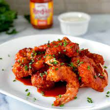

Buffalo Shrimp

This Buffalo shrimp is the best. You can adjust the intensity of the hot sauce to your liking — we like it hot! Serve with lemon wedges and blue cheese dressing.
Ingredients
- Shrimp
- Onions
- Cayenne pepper
- Flour
- Black pepper
Steps
- Combine flour, Creole-style seasoning, garlic powder, cayenne pepper, onion powder, and black pepper in a large resealable plastic bag.
- Rinse shrimp under cold water and place them in flour mixture. Seal the bag and shake until shrimp are well coated with flour mixture. Spread coated shrimp on a baking sheet and place in the refrigerator for 15 to 20 minutes. Set aside flour mixture in the bag.
- Working in batches, fry shrimp in hot oil until opaque, 2 to 3 minutes. Use a slotted spoon to remove fried shrimp to a serving bowl and coat with sauce.